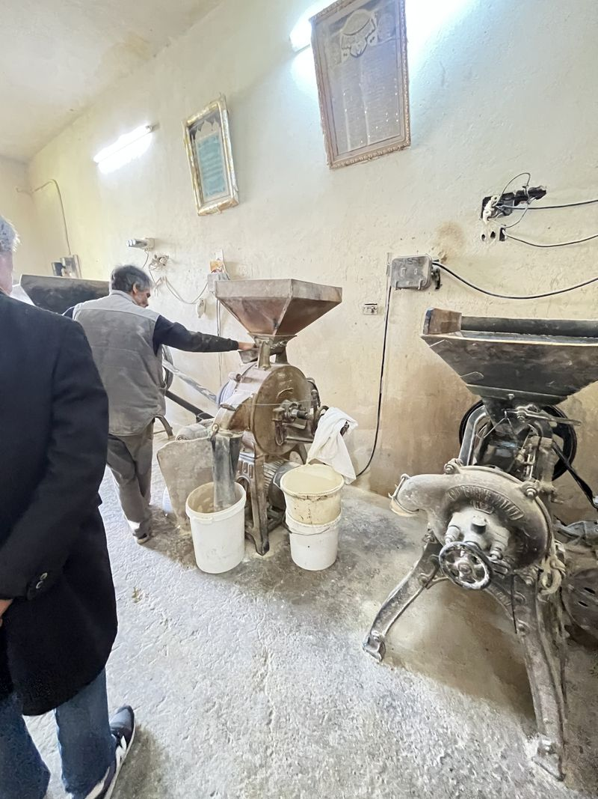
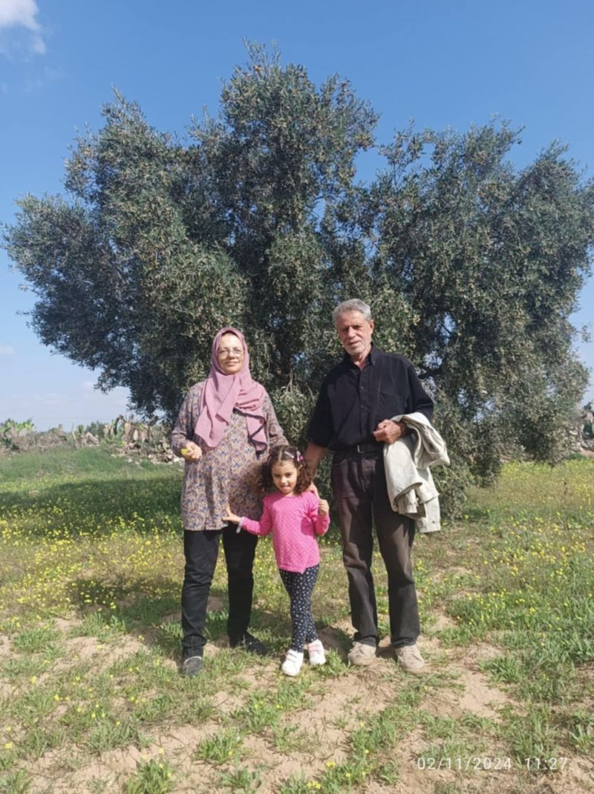
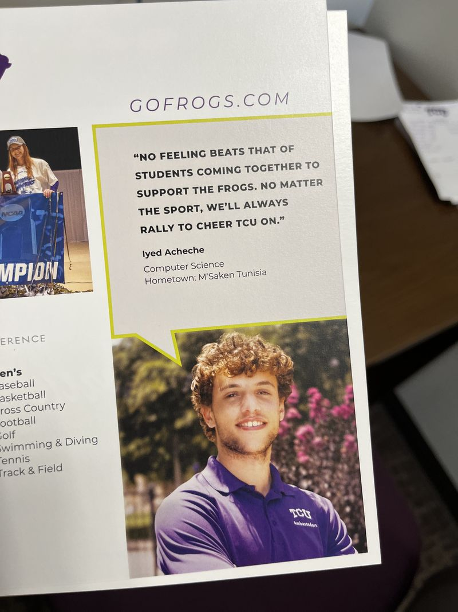
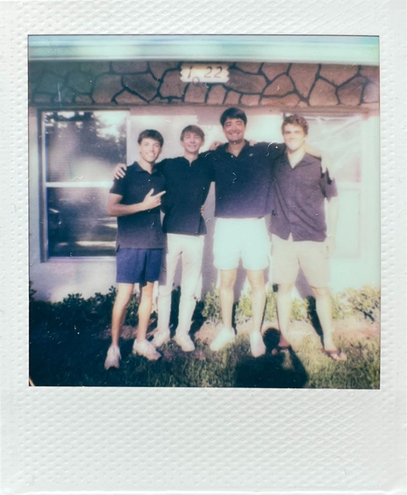

Story
From Sousse to Fort Worth, in six stops. Open a stop for more.
Sousse, Tunisia
I grew up in Sousse. My grandparents have an olive grove, and that is where I learned to harvest and press olives. It is where I first learned that good results take patience.


CodeInn
At fifteen I helped found CodeInn, a youth coding initiative in Sousse. It grew to three regions and taught more than 300 students the basics of programming through clubs and workshops.
More
Those years also took me to Yale Young Global Scholars in 2018 and to LaunchX at the University of Michigan in 2019, which moved online partway through. If you went through either program, I would love to hear from you.
African Leadership Academy
At eighteen I moved to Johannesburg for a two years at ALA, with an entrepreneurship and leadership curriculum alongside Cambridge A-Levels. I led Everse, an project funded by ALA that brought affordable tech to 30+ remote African artists. ALA is also where I first heard about TCU.
TCU, Fort Worth
I study computer information technology at Texas Christian University and graduate in December 2026. Along the way I have worked in IT support, been a student ambassador for four years, and joined the football video staff in August 2023, capturing and uploading game video for coaches and players. I am also a member of Delta Tau Delta.

Building software
In summer 2025 I interned at Teralogix, a young startup in Naples, Florida, helping build a proof of concept for an AI workflow platform. From September 2025 to August 2026 I worked at Brazos Safety Systems in Fort Worth, building integrations and data pipelines for an aviation safety platform.
The details are on the Work page.

Away from the screen
- Pickleball
- Electric guitar
- Stone carving
- Delta Tau Delta